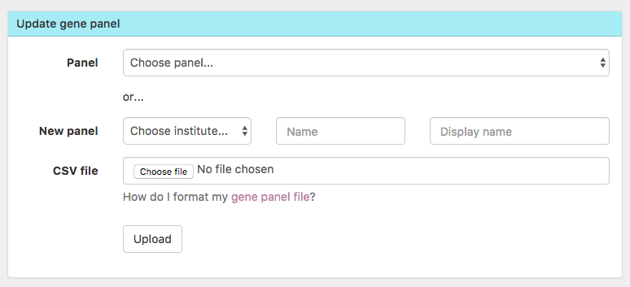
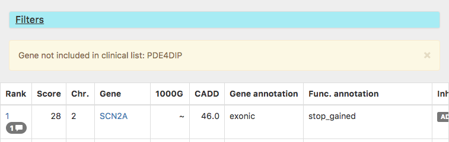

Whats new in 3.5?
What's new in 3.5? 🍁
Posted: 13 Nov 2017
The November update includes the following highlights:
New features
- You can now add an entirely NEW gene panel directly from Scout 🆕

-
Scout now uploads ALL variants on the mitochondrial chromosome (MT) - independently of rank score
-
Improvements to SV variant view:
- New frequencies: ClinGen CGH and Decipher
- Callers are displayed under GT call table
- You can now tag (variant tag) and comment on SV variants
- Gene panels now are now displayed
-
"n.d." (Not Determined) is now displayed when the variant length is unknown
-
We now report if you filtered for a gene in the clinical list which isn't part of any gene panel

Bugfixes
- Versions of transcripts are now kept for "disease causing transcripts" in the panels
- Ensembl transcript will now display in overview if no RefSeq transcript exists
- You can now reset the variant tag
- You can now filter variants on both HGNC ID and symbol
- We fixed an issue related to showing matching causative variants for a case
- Filtering on local observations will now include variant without any such annotations